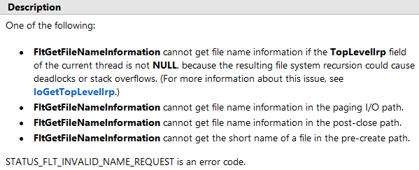

前言
拦截DLL的加载，主要的思路就是在 LdrLoadDll 过程中，所涉及的操作进行拦截，比如 CreateSection
CreateFileMapping 映射文件的操作，在32位系统中可以HOOK这些函数来拦截，而在64位系统中则可以
使用 MiniFilter 过滤映射文件时产生的 IRP_MJ_ACQUIRE_FOR_SECTION_SYNCHRONIZATION 操作。
还有一种方法，就是在 PsSetLoadImageNotifyRoutine 中修改DLL的入口点代码，但是存在一些问题，
首先DLL被拦截一次之后，重启系统前再也无法加载，另外在通知回调中，去掉内存写保护时会导致死锁，
需要硬编码在 EPROCESS 中找到这个锁先进行释放，然后才能用 ZwProtectVirturlMemory 去掉写保护，
改完代码后还需要手动加上锁，显然这种方式不仅通用性不好，而且还不易操作。
使用文件过滤
这里过滤框架使用的是WDK源码中的 src -> filesys -> miniFilter -> passThrough 项目，首先在
注册 FLT_OPERATION_REGISTRATION 的结构体中，修改关于文件映射IRP的处理函数，如下所示
1
2
3
4
5
6
| {
IRP_MJ_ACQUIRE_FOR_SECTION_SYNCHRONIZATION,
FLTFL_OPERATION_REGISTRATION_SKIP_PAGING_IO,
PtPreCreateSection,
PtPostOperationPassThrough
},
|
过滤文件映射的处理函数如下所示
1
2
3
4
5
6
7
8
9
10
11
12
13
14
15
16
17
18
19
20
21
22
23
24
25
26
27
28
29
30
31
32
33
34
35
36
37
38
39
40
41
42
43
44
45
46
47
48
| FLT_PREOP_CALLBACK_STATUS PtPreCreateSection(
__inout PFLT_CALLBACK_DATA Data,
__in PCFLT_RELATED_OBJECTS FltObjects,
__deref_out_opt PVOID *CompletionContext)
{
ULONG ProcessID = 0;
PEPROCESS EProcess = NULL;
NTSTATUS Status = STATUS_SUCCESS;
PFLT_FILE_NAME_INFORMATION NameInfo = NULL;
UNREFERENCED_PARAMETER(CompletionContext);
EProcess = FltGetRequestorProcess(Data);
ProcessID = FltGetRequestorProcessId(Data);
if (Data->Iopb->Parameters.AcquireForSectionSynchronization.SyncType
== SyncTypeCreateSection)
{
Status = FltGetFileNameInformation(Data,
FLT_FILE_NAME_NORMALIZED | FLT_FILE_NAME_QUERY_DEFAULT, &NameInfo);
{
if (NT_SUCCESS(Status))
{
Status = FltParseFileNameInformation(NameInfo);
if (NT_SUCCESS(Status))
{
Data->Iopb->TargetFileObject;
if (IsValidDll(FltObjects->Instance, FltObjects->FileObject))
{
FltReleaseFileNameInformation(NameInfo);
Data->IoStatus.Status = STATUS_ACCESS_DENIED;
return FLT_PREOP_COMPLETE;
}
}
FltReleaseFileNameInformation(NameInfo);
}
}
}
return FLT_PREOP_SUCCESS_WITH_CALLBACK;
}
|
验证过滤到的文件是否是DLL文件的函数。关于PE文件的验证，可以看前边写的PE数字签名相关文章。
1
2
3
4
5
6
7
8
9
10
11
| BOOLEAN IsValidDll(PFLT_INSTANCE Instance, PFILE_OBJECT FileObject)
{
ULONG Size = 0;
PUCHAR Buffer[1024] = { 0 };
LARGE_INTEGER Offset = { 0 };
NTSTATUS Status = STATUS_SUCCESS;
Status = FltReadFile(Instance, FileObject, &Offset, 1024, Buffer,
FLTFL_IO_OPERATION_DO_NOT_UPDATE_BYTE_OFFSET, &Size, NULL, NULL);
return FALSE;
}
|
注意事项
由于MiniFilter是分层过滤的，如果在高权重的过滤层直接把IRP完成了，那么低权重的过滤层就收不到
该IRP了，所以应该尽量的提高过滤驱动的权重。
某些情况下使用 FltGetFileNameInformation 函数无法获取文件名，比如使用 CreateFileMapping
和 MapViewOfFile 后，再使用 memset 写入数据时，触发的 IRP_MJ_WRITE 就无法获取文件名，但是在
IRP_MJ_CREATE 处能获取到，所以我们需要借助注册 FLT_CONTEXT_REGISTRATION 来传递上下文。

处理上下文的例子参考WDK源码中的 src -> filesys -> miniFilter -> ctx 项目。